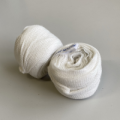

みんな大好き！ 格闘技アイテム
サークルで普段使っている練習道具をご紹介！
パンチングミット
もともとはボクシング用のミットです。ストレートやジャブをしっかり打ち込むことができ、複雑で正確なコンビネーションの練習もできます。ミッター（ミットを持つ人）も常に移動しながら打たせることで、ステップワークも身に着けさせることができます。ただしフックやワイルドパンチなど、大振りで力のあるパンチを受けそこなうと肘や肩を痛めてしまうので、当サークルではパンチングミットではジャブ・ストレート中心に練習しています。
ビックミット
上半身ぐらいの大きさのミット。別名たまご。散打では体重を前方に預けて、相手を突き飛ばすような蹴りを多用するため、このでっかいミットでガッと構えてドっと受けます。ビックミットの裏には持ち手があるので、（左前で構えるときは）左肩と左上腕でミット上半分を、左の太腿の上あたりでミットの底をしっかりと体に押し当てましょう。ヘンにスキマがあると、蹴りを受けた時にビックミット自体が凶器となってアナタを襲います。しっかりと体を密着させましょう！盾を構える感じです。いつの間にか盾術も上手くなるかも？
ハンドミット
もともとはテコンドーのキック用のミットです。別名フライドチキン。下の持ち手の部分を握って使用するために、パンチをミット越しとは言え手のひらでうけることになるパンチングミットよりも、ミッターの負担が少ないのが利点。またパンチングミットよりも長く、かつスナップも利かせられるため、ミットでの反撃を混ぜ込んだより実戦的なミットワークが可能。さらにフックやワイルドパンチも安全に受けられるため、当サークルではそれらのパンチの練習は主にこのミットを使用。

パンチンググローブ
普通のグローブよりも薄手で、親指が出ているのでモノもつかみやすい。この親指はスマフォのタイマーをクリックしたり、他の人がミットをつけるのを助けたりと、意外に大活躍。あと薄手のためか、普通のグローブよりもミットを打つといい音がなるような気がします。そして普通のグローブよりも安い！一家に一台、パンチンググローブ。
グローブ
これは中国で買ったグローブですが、確か散打用だったような。別名ドラ〇もん。普通のグローブよりもなんだかまるっこくて、手首側が細いような気がします。散打では投げ技もあるので、相手を引っかけやすくするために、ちょっとまるっこくなっているのかもしれません。またロングフックや打ち落としのワイルドパンチも多用するので、カクカクしているよりも、まるっこい方が打ちやすいのでしょう。たぶん。
バンテージ

手に巻く包帯みたいなヤツです。伸縮性のあるものと、ないものがあります。がっちり手を保護したい人には伸縮性のものがおススメですが、締めすぎると血が止まりますのでご注意を。なぜバンテージを巻くかというと、第一に皮膚の保護です。特に小指と薬指の付け根あたりは、なんどもミットを叩いていると切れてしまいます。第二に関節や腱の保護です。いわゆるテーピングと同じ効果なのですが、特に手首は打ち損じると筋を痛めやすいですので、手首にもしっかり巻きましょう。そして第三に、ルーティーンとでもいいますか。私はいつもストレッチしながら巻いていますが、そこでやる気というか、せっかく巻いたんだからちゃんと練習しよう、という気になります。四十も半ばを過ぎると、学生と同じメニューをするのはけっこう気合がいるものなんですよ。
縄跳び
散手競技のパンチング技術は打撃から投げにスムーズに移行するために、ワイルドパンチ（大振り）が多用されます。が、はじめから大振りのパンチを練習していると、ガードがおろそかになったり、ストレートで腋が開いたりしてしまいます。そこで当サークルではボクシングも積極的に取り入れています。
ボクシングと言えばロードワークとスキップワーク！縄跳びは一見すると地味な練習ですが、全身のバネや素早いステップワークを身に着けるための必須のトレーニングです。
また準備体操としてもちょうどいい運動になります。だいたい２～３ラウンドぐらい飛んで、体がほぐれてからミットワークをしましょう。
散打は投げもあるので、ボクシングのように重心を上げて移動する格闘技とは相性が悪い、という気もしなくはないのですが。套路練習の日にみっちりと架式（構え方、空気椅子みたいな練習です。）で下半身を鍛えることで、重心を上げるときは上げ、下げるときは下げる、といったメリハリを身につけましょう。